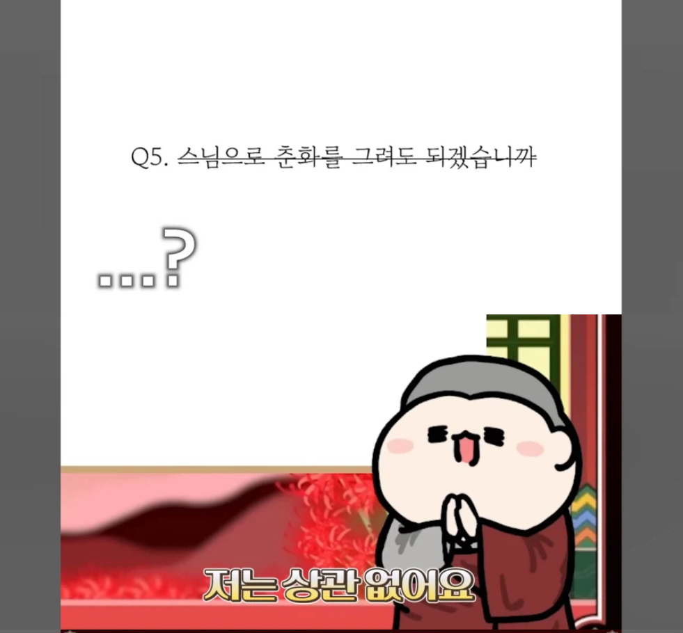
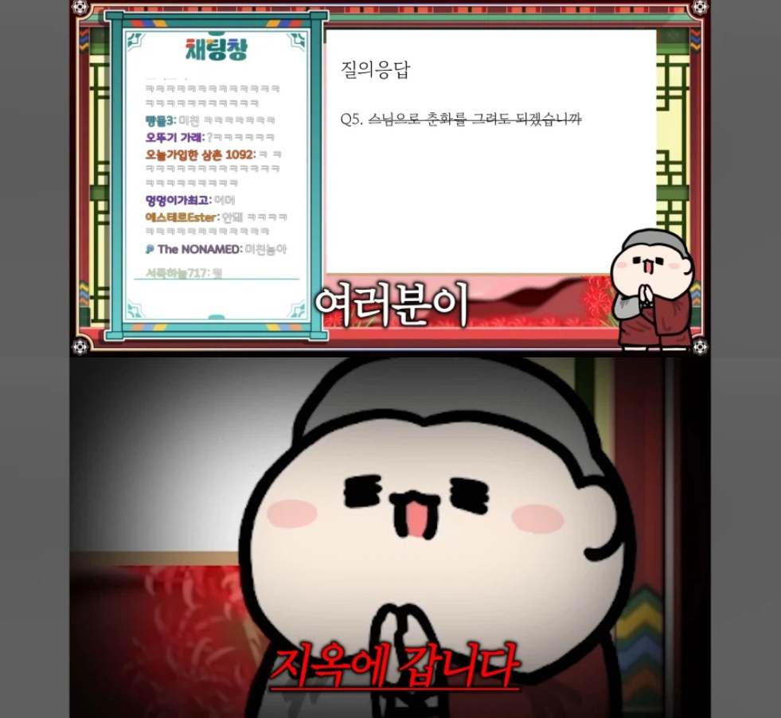

https://bbs.ruliweb.com/best/board/300143/read/77511032


https://bbs.ruliweb.com/best/board/300143/read/77511032



까짓거 한번해보죠~!
불교에서 말하길
음란하게 살면 비둘기
증오랑 분노를 내뿜으며 살면 독사
어리석고 무지한데 배우려고하지도 않고 살면 개미
게으르고 허영심만 가득하면 돼지
탐욕이랑 질투가 심하면 원숭이
사기치고 기만하면 닭
이렇게 태어난다고함
전부 다 하면 개쩌는 키메라로 환생가능?
인간 실격
짐승 합격❤️
사기친 애들은 치킨 희망자군
구구구구구구
저는 그럼 미소녀 암컷 고양이로 환생할게요 ^^
아까워하여 간사하게 속이며
도둑질을 많이 한 사람은
죽어서 남의 고기를 먹는
고양이ㆍ이리ㆍ호랑이가 되리라.
불설분별선악소기경이라는 불교 경전에선 이렇게 설명하네
우리나라가 닭을 많이먹고 흑인도닭좋아하고 흠
웃긴게 음란이 평생가나? 아님.. 증오분노는 순간 , 어리석 +게으름 + 탐욕 질투 + 사기 이런애들은 평생감
비둘기가 존나 많은 이유가 있었구나
근데 환생이니 염라니 이런건 부처의 가르침이 아니라 중국 한국을 거치면서 토속신앙과 결합해서 변질된거지?
기원이 뭐지
환생은 애초에 불교의 뿌리를 만드는 윤회사상의 핵심이고 염라도 인도에서 시작된 개념임
형상이나 내용은 변형될수있지만 그 내용의 뿌리자체는 원래부터있었음
찾아보니 인도에 이미 윤회 사상은 있었음 석가는 궁극적으로 윤회에서 벗어나기 위해 해탈해야 한다고 봤고
윤회라는거나 염라라던가 이런건 원래 인도에서부터 있었던거긴 한데, 물론 중국 한국 일본으로 오면서 뭔가 결합한 것도 많이 있음. 그러나 그것은 변질이라기 보다는 이해를 돕기 위한 현지화라고 말하는게 맞을 수도 있음. 심지어 스님들 중에는 윤회가 없는게 아닐까하고 생각하는 사람도 있음. 달라이라마도 윤회에 대해서 의심하고 있다는 말을 한적이 있고. 처음부터 있었던 그런 개념들도 부처님이 핵심 개념을 설명하기 위해 당시당처 사람들의 시각에 맞는 이야기를 한게 아닐까 하는 거지. 윤회에 대한 부분은 논란이 있는 내용이지만 어쨌든 불교에서는 핵심 내용을 잘 이해될 수 있게 여러 방편을 쓰기도 하며 그것은 여러 상황에 따라 다른 모양으로 나타날 수가 있는 것이고 그런 변화가 반드시 변질은 아닐 수 있다는 거지.
머 그거 안한다고 지옥안갈것 같진 않음
목사들은 왜 이런 재치가 없을까
목사 버튜버도 있어, 신부도 있고
https://x.com/vpastor_kim
https://x.com/leonVT_Holylive
부처로도 야짤을 그리고 염라로도 야짤을 그릴것이다
염라 뵐수 있는거야?